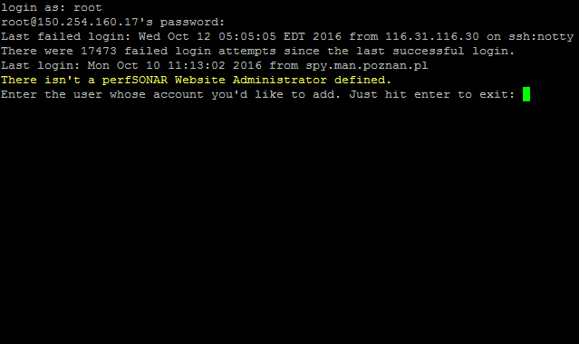
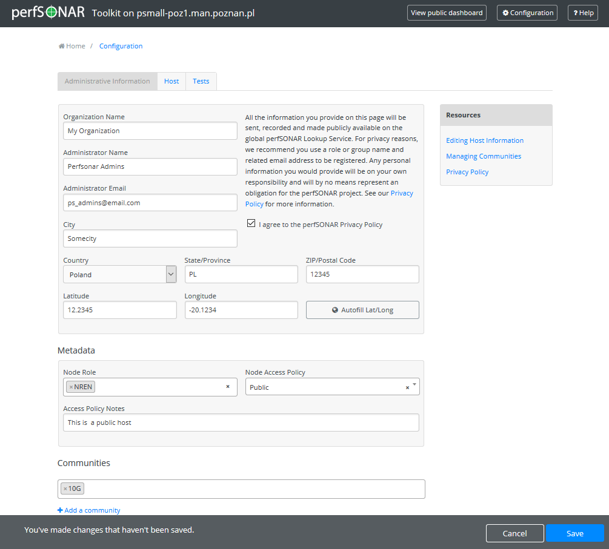
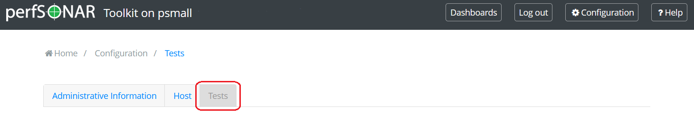
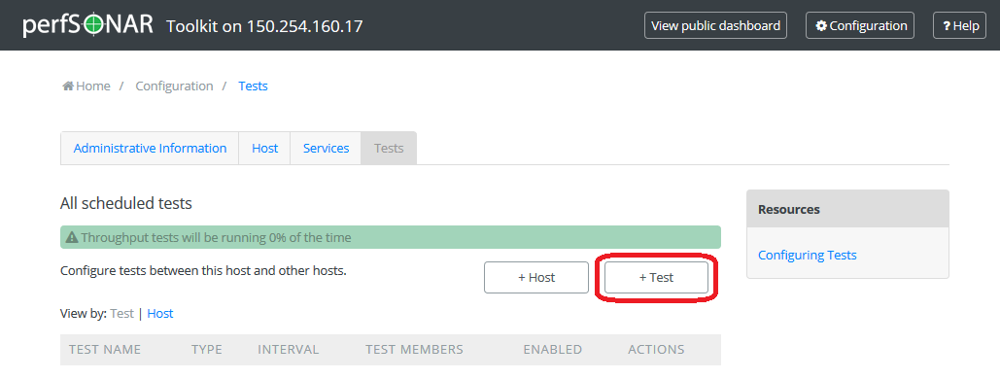
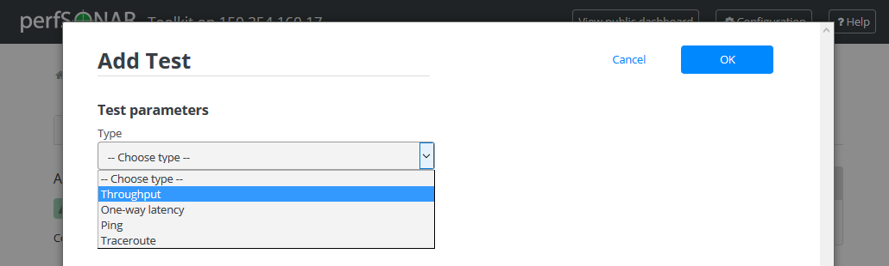
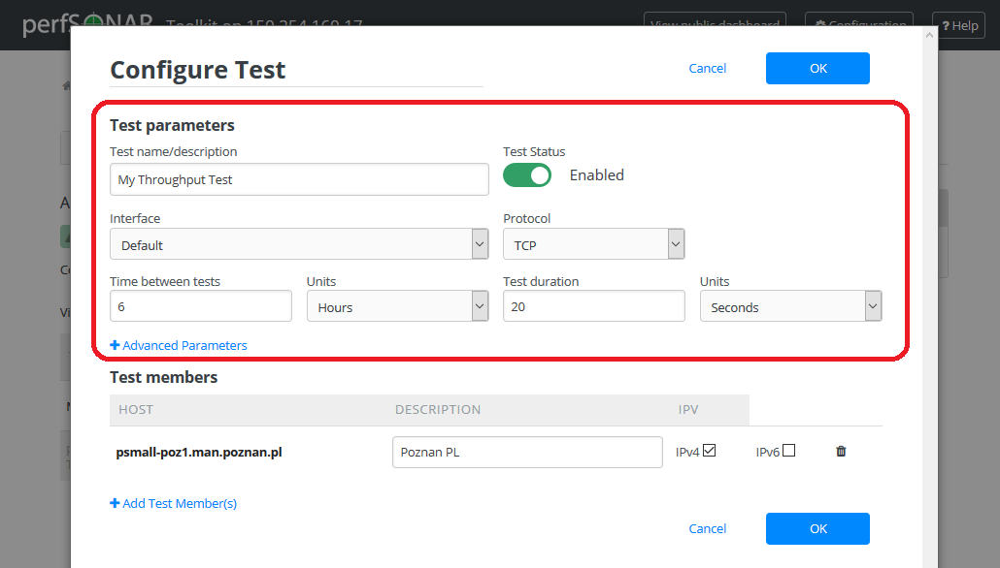
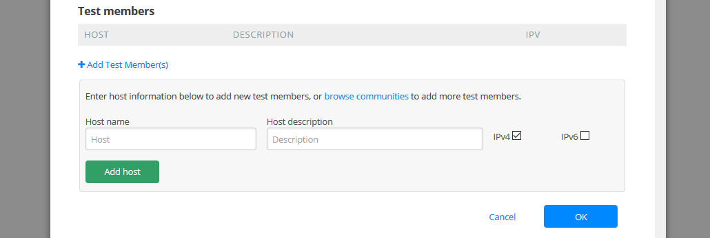
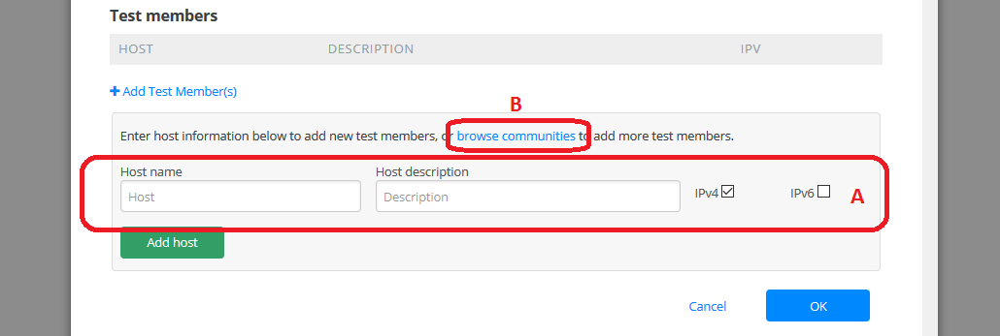
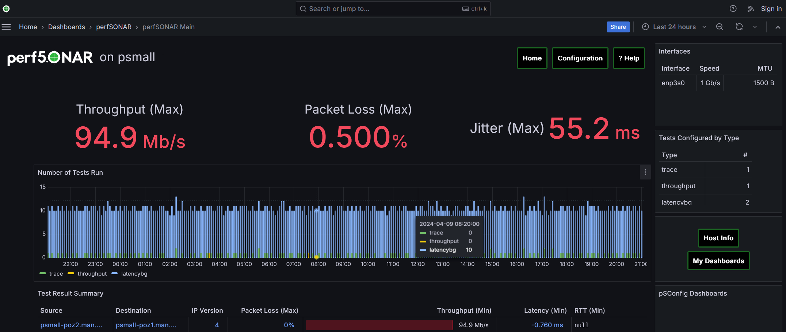

Toolkit Installation Quick Start¶
These instructions are for the full Toolkit installation on any supported operating system. For other perfSONAR installation options, see perfSONAR Installation Options.
Login to the host and become sudo:
sudo -s
Run the following command:
curl -s https://raw.githubusercontent.com/perfsonar/project/master/install-perfsonar| sh -s - toolkit
Exit sudo and become sudo again to trigger login prompt:
exit sudo -s
- You will be prompted to create a user and password that can be used to administer the host through the web interface. Follow the prompts to complete this step.
- 
Open http://<hostname> in a web browser where <hostname> is the name or address of your host
Click on the Configuration button in the right-upper corner and login as the web administrator user created in the previous step

On the page that loads, enter the requested information in the provided fields. In order to save Administrative Information you will be required to agree to the perfSONAR Privacy Policy. Tick the Privacy Policy checkbox to accept it. Click Save when you are done.
See also
For more information on updating administrative information see Updating Administrative Information
You are now ready to add some regular tests. Click on the Tests tab in the Configuration section.
On the page that loads click on the +Test button too choose and add the test type you would like.
A drop-down list shows to choose test type. Click on a selected test type you would like to add.
You will now be prompted for test parameters. Enter a human-readable description of the tests and change any parameters you desire. In general the defaults will be fine for most cases.
You now need to select other test members to test against. Go to section Test members in the same page.
You may add test members explicitly adding a host (A) or selecting browse communities and browsing the list (B). When you are done entering host details, hit Add host to add a test member to the list of hosts.
- Click OK to save test definition and close test configuration window. Then click the Save button at the bottom of the screen to apply your changes.
See also
For more information on adding regular tests see Configuring Regular Tests
After some time you may view the results of your tests in section Test Results Summary in the main page.
Warning
It will take time for data to be collected and display on the graphs. For throughput data this may be several hours depending on the test interval. For all other test types, you should see data within 30 minutes.
See also
For more information on using the graphs Test Results Graphs